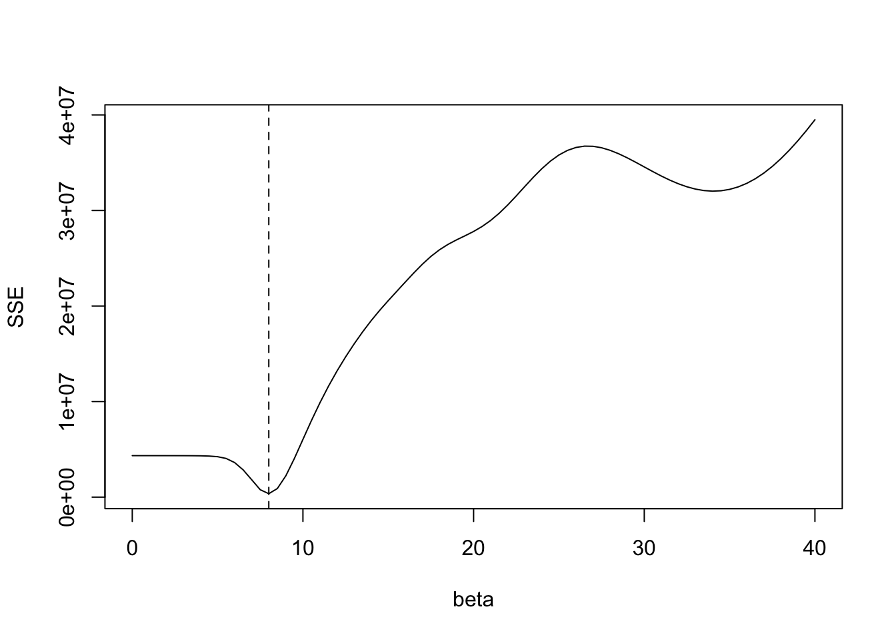
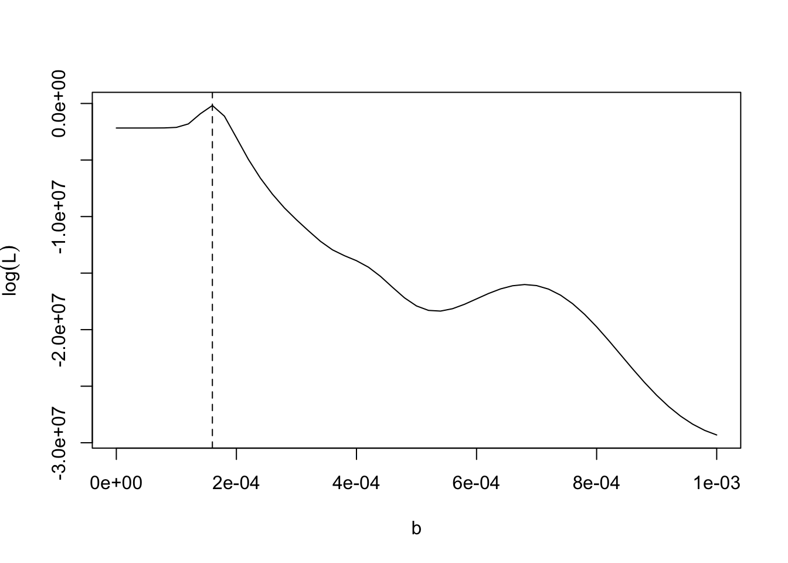

Chapter 8 Epidemic Modeling
8.1 An Introduction to Epidemic Modeling
Epidemic modeling has three main aims (Daley and Gani 2001): (1) to understand better the mechanisms by which diseases spread; (2) to identify which factors contribute to the spread of the epidemic, and therefore how we may control it; (3) to predict the future course of the epidemic. Although there are many epidemic modeling methods, mathematical and statistical models have played important roles in COVID-19studies. As illustrated in Figure 8.1, mathematical and statistical approaches are complementary, but their starting points are different, and the corresponding models tend to incorporate different details.
Figure 8.1: Mathematical and statistical perspectives on epidemic modeling.
As mentioned above, the fundamental concept of infectious disease epidemiology is investigating how the diseases spread. Mathematical models are undeniably useful in understanding the dynamics of infectious disease spread (e.g., when the peak will occur and whether resurgence will happen) and the effects of control measures (Keeling and Rohani 2008). An essential type of mathematical model is the class of mechanistic models such as the Susceptible - Infectious - Removed (SIR) compartmental model or the Susceptible - Exposed - Infectious - Recovered model (SEIR) as illustrated in Figure 8.2; see details in Brauer, Driessche, and Wu (2008) and Lawson et al. (2016). Mechanistic models make explicit hypotheses about the biological mechanisms that drive the dynamics of infection, and they function well if the aim is to evaluate the effectiveness of hypothetical NPIs in controlling disease spread (Lessler and Cummings 2016).
Figure 8.2: An illustration of SIR and SEIR models.
In the literature, statistical modeling has given the scientific field many successes in analyzing data and getting information about the mechanisms producing the data. Statistical modeling is a powerful tool for extracting information about the disease spread in epidemic studies (Held et al. 2020). Statistics starts with data, and statistical modeling allows data to speak for themselves. There are two cultures in statistical modeling (Breiman 2001): the data modeling culture and the algorithmic modeling culture. The first one assumes that the data are generated by a given stochastic data model, and it is usually designed for inference about the relationships between variables whilst also catering to prediction. Algorithmic models treat the data mechanism as unknown and are usually designed to make the most accurate predictions possible.
When analyzing the spread of infectious diseases, other factors, such as demographic characteristics, socioeconomic status, and control policies, may also be responsible for temporal or spatial patterns. For example, the spread of the disease varies considerably across different geographical regions. Local area - features, like socioeconomic factors and demographic conditions, can dramatically influence the course of the epidemic. These data are usually supplemented with the population information at the county level. Moreover, the capacity of the health care system, and control measures, such as government - mandated social distancing, also have a significant impact on the spread of the epidemic. Regression is a widely used statistical modeling method in epidemic studies because it produces a combination of the variables with weights indicating the impact of the variable (Jewell 2003). It can help determine which factors matter most, which can be ignored, and how those factors interact with each other. The benefit of regression analysis is that it can be used to understand different patterns in data. These insights may often be very valuable in understanding which factors contribute to the spread of COVID - 19.
Predicting the spread speed and severity of COVID-19is crucial to resource management, developing strategies to deal with the epidemic, and ultimately assisting in prevention efforts. Mathematical models are able to mimic the way disease spreads and can be used to project or simulate future transmission scenarios under various assumptions. Statistical models are more oriented towards predictions (Held et al. 2020). In fact, predictions are at the heart of statistical modeling. For example, time series analysis, one commonly used statistical forecasting approach, works by taking a series of historical observations and extrapolating the patterns into the future. Machine learning makes predictions based on known properties learned from the training data. However, purely statistical models only describe the observed data and give little information about the mechanism since they do not account for how transmission occurs. Therefore, they are generally not well - suited for long - term predictions, and a few weeks is usually close to being the ultimate prediction limit. Another advantage of statistical modeling is its ability to quantify uncertainty in the prediction, especially at an early phase of an epidemic with limited data. For example, statistical models can provide a prediction interval to understand the uncertainty surrounding the forecast (Brockwell and Davis 2016). See more discussions in the following section.
In summary, mathematical models are usually constructed in a more principle - driven manner, while statistical models are more data - driven. Although both mathematical and statistical models can be used to study the effect of NPIs and make predictions, the implementation details are different, and an understanding of the corresponding limitations is crucial. For maximal effectiveness, researchers working to advance epidemic modeling will need to appreciate and exploit the complementary strengths of mathematical and statistical models.
8.2 Compartment Models
Mathematical models of infectious disease dynamics have a rich history that dates back more than 100 years. Mathematically simple formulations that describe the transition of individuals in a population between ‘compartments’ that capture the infection status of individuals leads to surprisingly significant insight. Their elegance and simplicity allow the ease of expansion to more complexities through, for example, the addition of compartments. Expanding these models is often straight forward but the apparent simplicity can mask subtle, but important, model structure and parameterization choices. Furthermore, while there are many wonderful texts focused on infectious disease modeling, there exist several complexities that are rarely discussed in sufficient detail for a novice disease modeler.
We formulate our descriptions of disease transmission as compartmental models, with the population under study being divided into compartments.
At time \(t\), denote
- \(S(t)\): the number of susceptible people;
- \(E(t)\): the number of infected but not yet infectious people;
- \(I(t)\): the number of infectious people;
- \(R(t)\): the number of recovered people.
8.2.1 A Simple SIS Model (A Model for Diseases with No Immunity)
In many diseases, infectives return to the susceptible class on recovery because the disease confers no immunity. Such models are appropriate for most diseases transmitted by bacterial or helminth agents, and most sexually transmitted diseases (including gonorrhea, but not such diseases as AIDS, from which there is no recovery).
Figure 8.3: A simple SIS model.
In an SIS model, the total population size \(N = S(t) + I(t)\). The simplest SIS model, due to Kermack and McKendrick, is
\[\begin{eqnarray*} \frac{dS(t)}{dt}& = & - \beta I(t)\frac{S(t)}{N} + \gamma I(t), \\ \frac{dI(t)}{dt}& = &\beta I(t)\frac{S(t)}{N} - \gamma I(t) \end{eqnarray*}\]where \(\beta\) is the effective contact rate, and \[ \beta \propto \left(\frac{\mathrm{infection}}{\mathrm{contact}} \right) \times \left(\frac{\mathrm{contact}}{\mathrm{time}}\right). \]
Assumptions of SIS models
- The rate of new infections is given by mass action incidence.
- Infectives leave the infective class at rate \(\gamma I\) per unit time and return to the susceptible class.
- There is no entry into or departure from the population.
- There are no disease deaths, and the total population size is a constant \(N\).
8.2.2 An SIR Model
Figure 8.4: An SIR model.
Consider the SIR model in a population of size \(N\), and note \(N = S(t) + I(t) + R(t)\):
\[\begin{eqnarray*} \frac{dS(t)}{dt}& = & - \beta I(t)\frac{S(t)}{N}, \\ \frac{dI(t)}{dt}& = &\beta I(t)\frac{S(t)}{N} - \gamma I(t), \\ \frac{dR(t)}{dt}& = &\gamma I(t), \end{eqnarray*}\]where \(\beta\) is the effective contact rate, and \[ \beta \propto \left(\frac{\mathrm{infection}}{\mathrm{contact}} \right) \times \left(\frac{\mathrm{contact}}{\mathrm{time}}\right), \] i.e., (probability of transmission given a contact between a susceptible and an infectious individual) \(\times\) (average rate of contact between susceptible and infected individuals); \(\gamma\) is the removal rate, and \(\gamma^{-1}\) is the average infectious period. The logic of the transmission term is that \(\beta\) is the contact rate among hosts times the probability of infection given a contact.
Let \(s = S / N\), \(i = I / N\) and \(r = R / N\). Dividing the equations for \(S\), \(I\) and \(R\) by \(N\) we get the deterministic SIR epidemic model for this process in the form:
\[\begin{eqnarray*} \frac{ds(t)}{dt}& = & - \beta i(t)s(t), \\ \frac{di(t)}{dt}& = &\beta i(t)s(t) - \gamma i(t), \\ \frac{dr(t)}{dt}& = &\gamma i(t). \end{eqnarray*}\]Assumptions of SIR models
SIR models for diseases assume that infectives recover with immunity against reinfection.
- Constant (closed) population size: \(N\);
- Constant rates (e.g., transmission, removal rates);
- No demography (i.e., births and deaths);
- Well - mixed population: any infected individual has a probability of contacting any susceptible individual that is reasonably well approximated by the average.
## Load deSolve package
library(deSolve)
## Create an SIR function
sir <- function(time, state, parameters) {
with(as.list(c(state, parameters)), {
dS <- -beta * S * I
dI <- beta * S * I - gamma * I
dR <- gamma * I
return(list(c(dS, dI, dR)))
})
}Below, we consider a simulation example with \(s(0)=0.999\), \(i(0)=0.001\), \(r(0)=0.0\), \(\beta=0.3\) and \(\gamma=0.1\).
# Set parameters
# Proportion in each compartment: Susceptible 0.999, Infected 0.001, Recovered 0
init <- c(S = 0.999, I = 0.001, R = 0.0)
# beta: infection parameter; gamma: recovery parameter
parameters <- c(beta = 0.3, gamma = 0.1)
# Time frame
times <- seq(0, 300, by = 1)
# Solve using ode (General Solver for Ordinary Differential Equations)
out <- ode(y = init, times = times, func = sir, parms = parameters)
# change to data frame
out <- as.data.frame(out)
# Show data
head(out, 5)## time S I R
## 1 0 0.9990000 0.001000000 0.0000000000
## 2 1 0.9986676 0.001221467 0.0001109293
## 3 2 0.9982619 0.001491698 0.0002463585
## 4 3 0.9977671 0.001821286 0.0004116470
## 5 4 0.9971641 0.002222741 0.0006131418Figure 8.5 shows the evolution of the prevalence rate.
Figure 8.5: Simulation example 1.
Next, we consider another simulation example with \(s(0)=0.999\), \(i(0)=0.001\), \(r(0)=0.0\), \(\beta=0.075\) and \(\gamma=0.1\).
# Set parameters
# Proportion in each compartment: Susceptible 0.999, Infected 0.001, Recovered 0
init <- c(S = 0.999, I = 0.001, R = 0.0)
# beta: infection parameter; gamma: recovery parameter
parameters <- c(beta = 0.075, gamma = 0.1)
# Time frame
times <- seq(0, 300, by = 1)
# Solve using ode (General Solver for Ordinary Differential Equations)
out <- ode(y = init, times = times, func = sir, parms = parameters)
# change to data frame
out <- as.data.frame(out)Figure 8.6 shows the evolution of the prevalence rate.
Figure 8.6: Simulation example 1.
8.2.3 An SIR model with births and deaths
We have omitted births and deaths in our description of epidemic models because the time scale of an epidemic is generally much shorter than the demographic time scale. In effect, we have used a time scale on which the number of births and deaths in unit time is negligible. However, there are diseases that are endemic in many parts of the world and that cause millions of deaths each year. To model a disease that may be endemic, we need to think on a longer time scale and include births and deaths.

Figure 8.7: An SIR model with birth and death.
We consider the following SIR model with births and deaths:
\[\begin{eqnarray*} \frac{dS(t)}{dt}& = &\mu\{N - S(t)\} - \beta I(t)\frac{S(t)}{N}, \\ \frac{dI(t)}{dt}& = &\beta I(t)\frac{S(t)}{N} - (\mu + \gamma)I(t), \\ \frac{dR(t)}{dt}& = &\gamma I(t) - \mu R(t), \end{eqnarray*}\]where \(\beta\) is the effective contact rate, and \[ \beta \propto \left(\frac{\mathrm{infection}}{\mathrm{contact}} \right) \times \left(\frac{\mathrm{contact}}{\mathrm{time}}\right), \] i.e., (probability of transmission given a contact between a susceptible and an infectious individual) \(\times\) (average rate of contact between susceptible and infected individuals).
\(\mu\) is the birth/death rate;
\(\gamma\) is the removal rate, and \(\gamma^{-1}\) is the average infectious period.
At the early stage of an SIR outbreak, when \(S(t) \approx N\), the number of infected individuals \(I(t)\) is approximated by \[ I(t) \approx I_0 \exp \{(\beta - \gamma - \mu) t\} = I_0 \exp \{(R_0 - 1)(\gamma + \mu)t\}, \] where \(R_0 = \beta/(\gamma + \mu)\), \(I_0\) is the number of infectious people at time \(0\), \(\gamma^{-1}\) is the infectious period and \(\mu^{-1}\) is the host lifespan.
An epidemic occurs if the number of infected individuals increases, \[ \beta I \frac{S}{N} - (\mu + \gamma)I>0 \Rightarrow \beta - (\mu + \gamma)>0 \Rightarrow R_0>1. \]
8.2.4 SIR parameter estimation
- Feature match
At the early stage of an SIR outbreak, when \(S(t) \approx N\), the number of infected individuals \(I(t)\) is approximated by \[ I(t) \approx I_0 \exp \{(\beta - \gamma - \mu) t\} = I_0 \exp \{(R_0 - 1)(\gamma + \mu)t\}, \] where \(R_0\), \(I_0\) is the number of infectious people at time \(0\), \(\gamma^{-1}\) is the infectious period and \(\mu^{-1}\) is the host lifespan. It implies we can obtain a cheap and cheerful estimate of \(R_0\) by a simple linear regression.
- Least squares
The method of least squares gives us a way to quantify the discrepancy between the data and a model's predictions. We can then search over all possible values of a model's parameters to find the parameters that minimize this discrepancy.
Let \(\mu = 0\), for a given \((\beta, \gamma)\), we denote \(I(t;\beta, \gamma) = I(t)\) and \[ (\widehat{\beta}, \widehat{\gamma}) = \arg\min_{(\beta, \gamma)}\sum_{j = 1}^{n} \{I(t_j;\beta, \gamma) - Y_j\}^2, \] where \(Y_j\) is the number of observed infected people at time \(t_j\).
- Maximum likelihood
Let \(Y_j\) be the observed number of infected case. We can assume \[ Y_j \sim \textrm{Poisson}\{pI(t_j;\beta, \gamma, \mu)\}, \] where the parameter \(p\) reflects a combination of sampling efficiency and the detectability of infections.
8.2.5 Implementation of parameter estimation in R
Example code for implementing SIR to model the outbreak of measles in Niamey can be found in https://kingaa.github.io/clim-dis/parest/parest.html#fitting-sir-to-an-epidemic-curve-using-likelihood. We mainly show how to use R to find the parameters in SIR model by minimizing the sum of squared errors.
library(dplyr)
library(pomp)
library(plotly)
library(slid)8.2.5.1 Example 1. Outbreak of measles in Niamey
niamey <- read.csv("http://kingaa.github.io/clim-dis/parest/niamey.csv")
plot_ly(data = niamey) %>%
add_trace(x = ~biweek, y = ~measles, color = ~community,
type = 'scatter', mode = 'lines+markers')niameyA <- pomp(
data = subset(niamey, community == "A", select = - community),
times = "biweek", t0 = 0,
skeleton = vectorfield(
Csnippet("
DS = - Beta*S*I/N;
DI = Beta*S*I/N - gamma*I;
DR = gamma*I;")),
rinit = Csnippet("
S = S_0;
I = I_0;
R = N - S_0 - I_0;"),
statenames = c("S", "I", "R"),
paramnames = c("Beta", "gamma", "N", "S_0", "I_0"))If we assume all the other parameters are known, one simple option to find optimal \(beta\) would be grid searching a value that minimizes the sum of squared error (SSE), which is the difference between the fitted infection curve with given \(beta\) compared to the true observations.
sse <- function (params) {
x <- trajectory(niameyA, params = params)
discrep <- x["I", , ] - obs(niameyA)
sum(discrep^2)
}
# assume gamma = 1 is known
# grid search for beta
f1 <- function (beta) {
params <- c(Beta = beta, gamma = 1, N = 50000, S_0 = 10000, I_0 = 10)
sse(params)
}
beta <- seq(from = 0, to = 40, by = 0.5)
SSE <- sapply(beta, f1)
plot(beta, SSE, type = 'l')
beta.hat1 <- beta[which.min(SSE)]
abline(v = beta.hat1, lty = 2)
Next, we plugin the estimated \(\hat{\beta}\) to the process and visualize the fitted curve for \(I(t)\) compared to the observed path.
coef(niameyA) <- c(Beta = beta.hat1, gamma = 1, N = 50000, S_0 = 10000, I_0 = 10)
x1 <- trajectory(niameyA, format = "data.frame")
sir.fit.df <- left_join(as.data.frame(niameyA), x1, by = 'biweek')
plot_ly(data = sir.fit.df) %>%
add_trace(x = ~biweek, y = ~measles, type = 'scatter',
mode = 'lines+markers', name = 'data') %>%
add_trace(x = ~biweek, y = ~I, type = 'scatter',
mode = 'lines+markers', name = 'fitted')However, this grid-search approach won't perform well when we have more than one parameter. In that case, we can use the optim function instead.
f2 <- function (par) {
params <- c(Beta=par[1],gamma=par[2],N=50000,S_0=10000,I_0=par[3])
sse(params)
}
fit2 <- optim(fn=f2,par=c(8,1,10))
fit2## $par
## [1] 9.892048 1.150991 1.042747
##
## $value
## [1] 164836.4
##
## $counts
## function gradient
## 253 NA
##
## $convergence
## [1] 0
##
## $message
## NULLbeta.hat2 <- fit2$par[1]
gamma.hat2 <- fit2$par[2]
I_0.hat2 <- fit2$par[3]
coef(niameyA) <- c(Beta = beta.hat2, gamma = gamma.hat2, N = 50000, S_0 = 10000, I_0 = I_0.hat2)
x2 <- trajectory(niameyA, format = "data.frame")
sir.fit.df <- left_join(as.data.frame(niameyA), x2, by = 'biweek')
plot_ly(data = sir.fit.df) %>%
add_trace(x = ~biweek, y = ~measles, type = 'scatter',
mode = 'lines+markers', name = 'data') %>%
add_trace(x = ~biweek, y = ~I, type = 'scatter',
mode = 'lines+markers', name = 'fitted')Another way to fit the model is using likelihood. Note that the model can be simplified a little bit by defining \(b = \beta/N\).
niameyA2 <- pomp(
data=subset(niamey,community=="A",select=-community),
times="biweek",t0=0,
skeleton=vectorfield(
Csnippet("
double incidence;
incidence = b*S*I;
DS = -incidence;
DI = incidence-gamma*I;")),
rinit=Csnippet("
S = S_0;
I = I_0;"),
paramnames=c("b","gamma","S_0","I_0"),
statenames=c("S","I"))
loglik.normal <- function (params) {
x <- trajectory(niameyA2,params=params)
sum(dnorm(x=obs(niameyA2),mean=x["I",,],
sd=params["sigma"],log=TRUE))
}
f3 <- function (b) {
params <- c(S_0=10000,I_0=10,gamma=1,b=b,sigma=1)
loglik.normal(params)
}
b <- seq(from=0,to=0.001,by=0.00002)
ll <- sapply(b,f3)
plot(b,ll,type='l',ylab=expression(log(L)))
b.hat <- b[which.max(ll)]
abline(v=b.hat,lty=2)
coef(niameyA2) <- c(S_0=10000,I_0=10,gamma=1,b=b.hat,sigma=1)
x <- trajectory(niameyA2, format = "data.frame")
sir.fit.df <- left_join(as.data.frame(niameyA2), x, by = 'biweek')
plot_ly(data = sir.fit.df) %>%
add_trace(x = ~biweek, y = ~measles, type = 'scatter',
mode = 'lines+markers', name = 'data') %>%
add_trace(x = ~biweek, y = ~I, type = 'scatter',
mode = 'lines+markers', name = 'fitted')Besides a Normal distribution, it is also possible to choose other random compenent, for example, a Poisson distribution.
8.2.5.2 Example 2. COVID-19
In the COVID-19 case, the situation becomes slightly more complicated due to the unsatisfying data quality in terms of active cases and recovered cases. Therefore, we modify the algorithm to find the parameters that minimize the distance between the curve of fitted active cases (\(I\)) plus removed compartment \(R\) and the cumulative positive COVID-19 cases time series. If we use the data observed since the beginning of the pandemic, it is reasonable to set the initial value \(I_{0}\) to be 1 and focusing on the estimation of other parameters. However, if we choose a different training period, for example, the most recent 60 days, it is possible the initial value of active cases \(I_{0}\) may be unobserved or calculated inaccurately. Therefore, the initial value can also be treated as a parameter and estimated based on collected data. In this case, an optimizing function such as optim() might be preferred than grid search. Here is an example of implementing SIR model to fit the spread of COVID-19 in Los Angeles, California.
data("I.county")
data("pop.county")
# the row storing the data for Los Angeles
i <- which(I.county$County == 'Orange' & I.county$State == 'California')
N0 <- pop.county %>%
filter(County == 'Orange County' & State == 'California') %>%
pull(population)
est.h <- 60
pred.h <- 12
date.start <- as.Date('2020-10-01')
dates.train <- date.start + 0:(est.h - 1) # training period
dates.test <- date.start + est.h + 0:(pred.h - 1) # testing period
dates.all <- date.start + 0:(est.h + pred.h - 1)
P.train <- data.frame(Date = 0:(est.h - 1),
P_cases = as.numeric(I.county[i,
paste0('X', as.character(dates.train,
format = '%Y.%m.%d'))]))
P.all <- data.frame(Date = 0:(est.h + pred.h - 1),
P_cases = as.numeric(I.county[i,
paste0('X', as.character(dates.all,
format = '%Y.%m.%d'))]))Now we define a pomp object encoding the model and the data and a loss function SSE that evaluate the loss function value based on the simulated trajectories with given parameters.
process.tmp <- pomp(
data = P.train,
times = "Date", t0 = 0,
skeleton = vectorfield(
Csnippet("
DS = - Beta*S*I/N;
DI = Beta*S*I/N - gamma*I;
DR = gamma*I;")),
rinit = Csnippet("
S = S_0;
I = I_0;
R = N - S_0 - I_0;"),
statenames = c("S", "I", "R"),
paramnames = c("Beta", "gamma", "N", "S_0", "I_0"))
sse <- function (params) {
x <- trajectory(process.tmp, params = params)
discrep <- x["I", , ] + x["R", , ] - obs(process.tmp)
sum(discrep^2)
}Next, we can find the parameters that minimize the SSE using optim function.
# set initial value of the process
S0 <- N0 - P.train$P_cases[1]
# assume that the removal rate is known
R.rate <- 0.05
f1 <- function (par) {
params <- c(Beta = par[2], gamma = R.rate, N = N0,
S_0 = S0, I_0 = par[1])
sse(params)
}
# initial value for parameters
beta0 <- 0.07
I0 <- 1000
fit1 <- optim(fn = f1, par = c(I0, beta0))
I0.hat1 <- fit1$par[1]
beta.hat1 <- fit1$par[2]
process.tmp1 <- process.tmp
pomp::coef(process.tmp1) <- c(Beta = beta.hat1, gamma = R.rate,
N = N0, S_0 = S0, I_0 = I0.hat1)
x1 <- trajectory(process.tmp1, times = 0:(est.h + pred.h - 1),
format = "data.frame")
valid.df <- data.frame(Date = dates.all,
P_cases = P.all$P_cases,
SIR_P = x1$I + x1$R,
type = c(rep('fitted', est.h),
rep('predicted', pred.h)))
# Visualization of fitting
plot_ly(data = valid.df) %>%
add_trace(x = ~Date, y = ~P_cases, type = 'scatter',
mode = 'lines+markers', name = 'infected cases') %>%
add_trace(x = ~Date, y = ~SIR_P, symbol = ~type,
mode = 'lines+markers')## No trace type specified:
## Based on info supplied, a 'scatter' trace seems appropriate.
## Read more about this trace type -> https://plotly.com/r/reference/#scatter8.2.6 Basic Reproduction Number
A key concept is the basic reproduction number (\(R_0\)), which is defined as the expected number of secondary cases produced by a single (typical) infection in a completely susceptible population.
It is important to note that \(R_0\) is a dimensionless number and not a rate, and \[ R_0 \propto \left(\frac{\mathrm{infection}}{\mathrm{contact}} \right) \times \left(\frac{\mathrm{contact}}{\mathrm{time}}\right) \times \left(\frac{\mathrm{time}}{\mathrm{infection}}\right). \]
If \(R_0 < 1\) the disease dies out, while if \(R_0 > 1\) the disease becomes endemic.
For the SIR model, when \(S(t) \approx N\), \(R_0 = \frac{\beta}{\gamma + \mu}\).
For the SEIR model, when \(S(t) \approx N\), \(R_0 = \frac{\sigma}{\sigma + \mu} \times \frac{\beta}{\gamma + \mu}\).
If \(R_0 < 1\), each existing infection causes less than one new infection. In this case, the disease will decline and eventually die out.
If \(R_0 = 1\), each existing infection causes one new infection. The disease will stay alive and stable, but there won’t be an outbreak or an epidemic.
If \(R_0 > 1\), each existing infection causes more than one new infection. The disease will be transmitted between people, and there may be an outbreak or epidemic.
COVID-19 \(R_0\)
The \(R_0\) for SAS-Cov-2 is a median of 5.7, according to a study published online in Emerging Infectious Diseases. That’s about double an earlier R0 estimate of 2.2 to 2.7
Here, 5.7 means that one person with COVID-19can potentially transmit the coronavirus to 5 to 6 people, rather than the 2 to 3 researchers originally thought.
With an \(R_0\) of 5.7, at least 82% of the population needs to be immune to COVID-19to stop its transmission through vaccination and herd immunity.
8.2.7 SEIR Model
- Consider the SIR model in a population of size \(N\), and note that \(N = S(t) + I(t) + R(t)\).
- \(\omega^{-1}\) is the average duration of immunity;
- \(\sigma^{-1}\) is the average latent period.
8.2.8 Herd Immunity
In order to prevent a disease from becoming endemic it is necessary to reduce the basic reproduction number \(R_0\) below one. This may sometimes be achieved by immunization.
If a fraction \(p\) of the newborn members per unit time of the population is successfully immunized, the effect is to replace \(N\) by \(N(1 - p)\), and thus to reduce the basic reproduction number to \(R_0(1 - p)\). The requirement \(R_0(1 - p) < 1\) gives \(1 - p < 1/R_0\), or \[ p > 1 - \frac{1}{R_0}. \]
A population is said to have herd immunity if a large enough fraction has been immunized to assure that the disease cannot become endemic.
The only disease for which this has actually been achieved worldwide is smallpox for which \(R_0\) is approximately 5, so that 80% immunization does provide herd immunity, and rinderpest, a cattle disease.
For measles, epidemiological data in the United States indicate that \(R_0\) for rural populations ranges from 5.4 to 6.3, requiring vaccination of 81.5% to 84.1% of the population. In urban areas \(R_0\) ranges from 8.3 to 13.0, requiring vaccination of 88.0% to 92.3% percent of the population.
Exercise 1: consider loss functions other than SSE. Exercise 2: implement model-fitting procedure using SEIR model. Exercise 3: try to use other optimizers, such as nlminb<>. Exercise 4: Poisson random component?
References
Brauer, Fred, Pauline van den Driessche, and Jianhong Wu. 2008. Mathematical Epidemiology. Vol. 1945. Springer.
Breiman, Leo. 2001. “Statistical Modeling: The Two Cultures.” Statist. Sci. 16 (3): 199–231. doi:10.1214/ss/1009213726.
Brockwell, Peter J., and Richard A. Davis. 2016. Introduction to Time Series and Forecasting. Third. Springer Texts in Statistics. Springer, [Cham]. doi:10.1007/978-3-319-29854-2.
Daley, Daryl J, and Joe Gani. 2001. Epidemic Modelling: An Introduction. Cambridge Studies in Mathematical Biology. Cambridge University Press. doi:10.1017/CBO9780511608834.
Held, Leonhard, Niel Hens, Philip D O’Neill, and Jacco Wallinga. 2020. Handbook of Infectious Disease Data Analysis. New York: Chapman; Hall/CRC. doi:s10.1201/9781315222912.
Jewell, Nicholas P. 2003. Statistics for Epidemiology. CRC Press. doi:10.1093/ije/dyh293.
Keeling, Matt J., and Pejman Rohani. 2008. Modeling Infectious Diseases in Humans and Animals. Princeton University Press. doi:10.2307/j.ctvcm4gk0.
Lawson, Andrew B, Sudipto Banerjee, Robert P Haining, and María Dolores Ugarte. 2016. Handbook of Spatial Epidemiology. CRC Press. doi:10.1201/b19470.
Lessler, Justin, and Derek AT Cummings. 2016. “Mechanistic Models of Infectious Disease and Their Impact on Public Health.” American Journal of Epidemiology 183 (5). Oxford University Press: 415–22. doi:10.1093/aje/kww021.